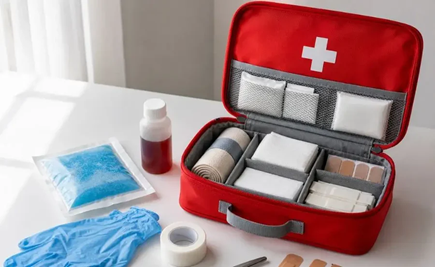
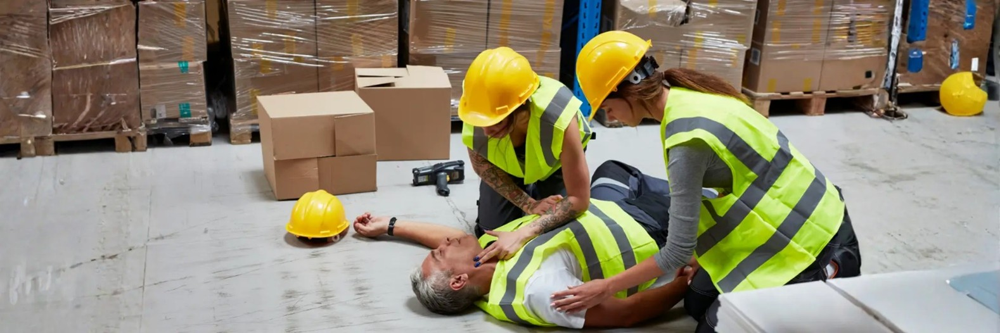
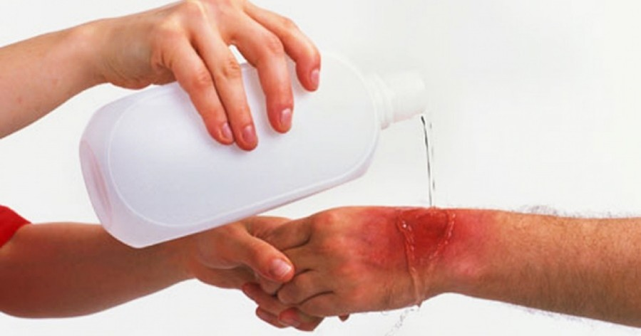
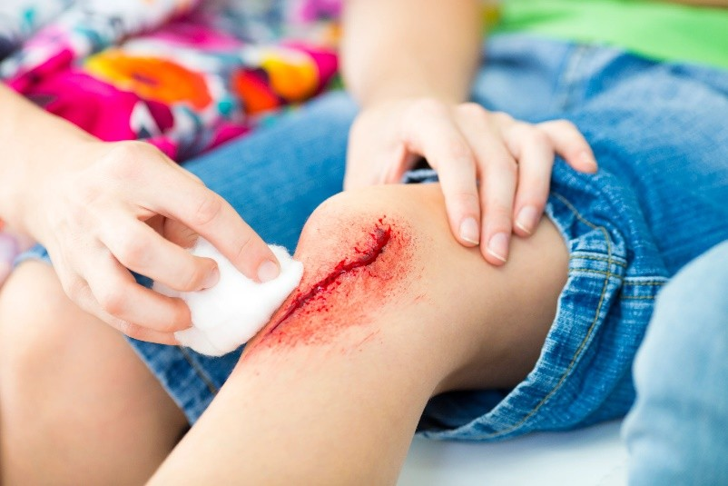
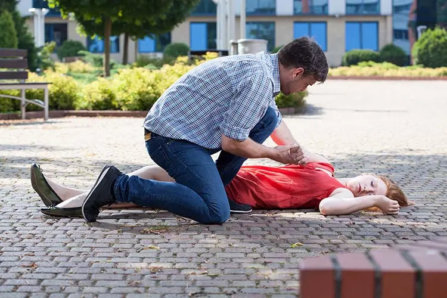
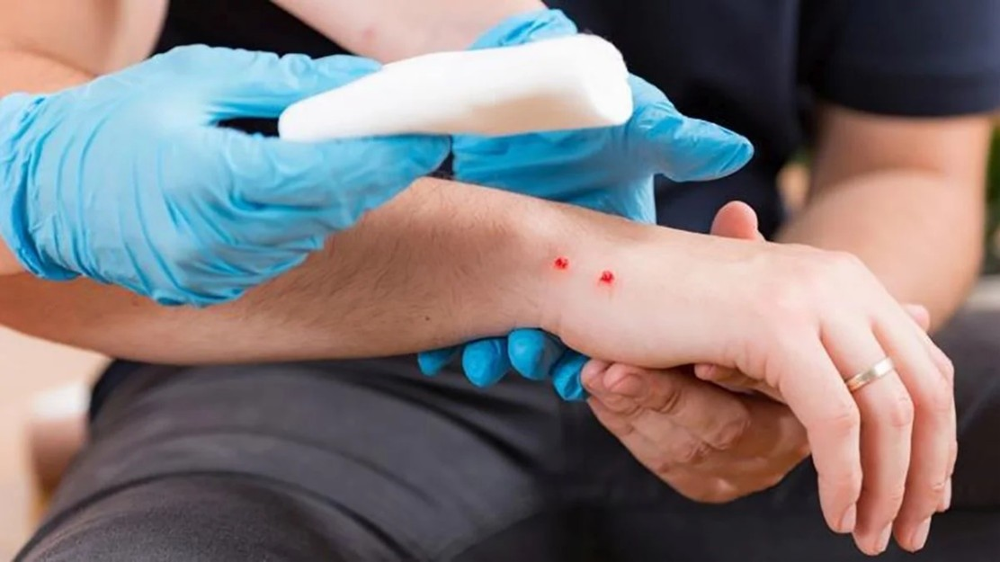
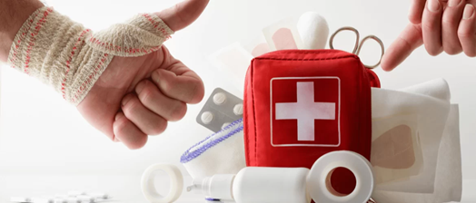
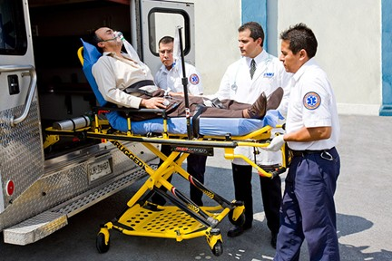

La educación ambiental es un proceso continuo de aprendizaje que busca desarrollar en las personas conocimientos, valores, habilidades y actitudes que les permitan comprender la relación entre los seres humanos y la naturaleza, así como actuar responsablemente para proteger y conservar el medio ambiente. La palabra educación proviene del latín "educatio", que significa formación, instrucción o crianza, mientras que ambiental deriva del término ambiente, originado en el latín "ambiens", que significa "lo que rodea". Desde esta perspectiva, la educación ambiental puede entenderse como la formación de ciudadanos conscientes de su entorno y comprometidos con su cuidado.
Aunque la humanidad ha dependido de la naturaleza desde sus orígenes, la educación ambiental como disciplina comenzó a consolidarse durante el siglo XX, cuando los efectos de la contaminación industrial, la deforestación, la pérdida de biodiversidad y el crecimiento acelerado de las ciudades despertaron preocupación a nivel mundial. A medida que estos problemas se hicieron más evidentes, surgió la necesidad de educar a las personas para comprender las consecuencias de sus acciones sobre el planeta y promover formas de vida más sostenibles.
La educación ambiental no se limita a enseñar conceptos sobre bosques, animales, ríos o reciclaje. Su verdadero propósito es transformar la manera en que las personas perciben y se relacionan con el ambiente. Busca desarrollar una conciencia crítica que permita identificar problemas ambientales, analizar sus causas y participar activamente en la búsqueda de soluciones.
En el contexto educativo, la educación ambiental desempeña un papel fundamental en la formación integral de los estudiantes. A través de actividades prácticas como huertos escolares, jornadas de reforestación, campañas de limpieza, proyectos de reciclaje y acciones de conservación del agua, los niños y jóvenes aprenden que sus decisiones tienen impacto sobre el entorno.
En Honduras, la educación ambiental cobra especial relevancia debido a la riqueza natural del país y a los desafíos que enfrenta en materia de conservación. Bosques, montañas, ríos y áreas protegidas constituyen un patrimonio invaluable que requiere del compromiso de todos los sectores de la sociedad.
El entorno es el conjunto de elementos naturales, sociales y culturales que rodean a las personas e influyen directamente en su vida cotidiana. Incluye el aire que respiramos, el agua que consumimos, los suelos donde cultivamos alimentos, los bosques que regulan el clima y los espacios donde convivimos como comunidad. La palabra entorno proviene del verbo latino tornare, relacionado con la idea de rodear o estar alrededor de algo. Por ello, cuidar nuestro entorno significa proteger todo aquello que hace posible la vida y el bienestar humano.
La importancia de cuidar nuestro entorno radica en que nuestra salud, economía y bienestar dependen directamente de él. Un ambiente sano proporciona agua limpia, aire puro, alimentos seguros y espacios adecuados para el desarrollo humano. Por el contrario, cuando los ecosistemas son degradados, aumentan los riesgos de enfermedades, escasez de recursos y desastres naturales que afectan especialmente a las comunidades más vulnerables.
Los bosques, por ejemplo, desempeñan funciones esenciales para la vida. Además de albergar una gran diversidad de especies, ayudan a regular el clima, protegen los suelos de la erosión y contribuyen a la producción de agua. Cuando estos ecosistemas son destruidos por incendios o tala indiscriminada, se generan consecuencias que pueden sentirse durante muchos años.
La protección del entorno comienza con acciones sencillas que pueden realizarse en el hogar, la escuela y la comunidad. Ahorrar agua, evitar arrojar basura en espacios públicos, reciclar materiales, plantar árboles y participar en actividades de limpieza son ejemplos de cómo cada persona puede contribuir a la conservación ambiental.
La gestión del riesgo es el conjunto de acciones, conocimientos y estrategias que buscan identificar, prevenir y reducir los efectos de fenómenos naturales o provocados por el ser humano que pueden causar daños a las personas, las comunidades y el ambiente. La palabra riesgo proviene del italiano risico, que hace referencia a la posibilidad de que ocurra un daño o pérdida. En este sentido, la gestión del riesgo no busca eliminar los fenómenos naturales, sino preparar a la sociedad para enfrentarlos de manera segura y organizada.
En el ámbito escolar y comunitario, la gestión del riesgo es fundamental porque permite salvar vidas, proteger bienes materiales y reducir el impacto de los desastres. También fomenta una cultura de prevención, en la que las personas no solo reaccionan ante una emergencia, sino que se preparan antes de que ocurra.
Un Sistema de Alerta Temprana (SAT) es un conjunto de herramientas, procedimientos y redes de comunicación que permiten detectar a tiempo la presencia de un peligro natural o antrópico, y avisar a la población para que tome medidas de protección. El objetivo principal de un SAT es reducir pérdidas humanas y materiales mediante la emisión oportuna de alertas. El concepto de alerta proviene del italiano all'erta, que significa "estar atento" o "en vigilancia".
Los SAT funcionan a través de cuatro componentes principales: la identificación del riesgo, el monitoreo constante del fenómeno, la comunicación de la alerta y la capacidad de respuesta de la comunidad.
La prevención de desastres es el conjunto de medidas destinadas a evitar o reducir los impactos negativos de fenómenos naturales. A diferencia de la respuesta a emergencias, la prevención actúa antes de que ocurra el evento, lo que permite proteger vidas humanas y minimizar daños. La palabra prevención proviene del latín praeventio, que significa "anticiparse a un hecho".
Prepararse ante emergencias naturales significa desarrollar conocimientos, habilidades y recursos que permitan actuar de manera rápida y segura cuando ocurre un evento inesperado. Es fundamental conocer qué tipos de amenazas existen en la comunidad, como inundaciones, deslizamientos o tormentas, e identificar rutas de evacuación, zonas seguras y puntos de encuentro.
Cada familia debe tener un plan de emergencia que incluya qué hacer, dónde reunirse y cómo comunicarse en caso de separación. En las escuelas, estos planes se fortalecen mediante brigadas de emergencia y simulacros.
Las inundaciones son uno de los desastres naturales más frecuentes en muchas regiones. Ocurren cuando el agua cubre zonas que normalmente están secas debido a lluvias intensas o desbordamiento de ríos.
Entre las principales señales de alerta se encuentran:
Los deslizamientos son movimientos de tierra que ocurren cuando el suelo pierde estabilidad, generalmente debido a lluvias intensas o deforestación.
El monitoreo comunitario de riesgos es la participación activa de los habitantes de una comunidad en la observación y seguimiento de posibles amenazas naturales. Las comunidades pueden organizar comités de vigilancia que supervisen ríos, laderas y zonas vulnerables, utilizando herramientas simples como pluviómetros caseros o registros de lluvia. Este tipo de monitoreo fortalece la organización social y mejora la capacidad de respuesta ante emergencias.
La mochila de emergencia es un recurso esencial que contiene artículos básicos para sobrevivir durante las primeras horas o días después de un desastre.
Los simulacros son prácticas organizadas que simulan situaciones de emergencia con el objetivo de preparar a las personas para actuar correctamente en caso de un desastre real. La palabra simulacro proviene del latín simulare, que significa "representar o imitar".
Su importancia radica en que ayudan a reducir el pánico, mejorar la organización y fortalecer la capacidad de reacción de la comunidad. En las escuelas, los simulacros permiten que estudiantes y docentes conozcan rutas de evacuación y roles específicos durante una emergencia. Realizar simulacros periódicamente salva vidas, ya que convierte el conocimiento en acción efectiva.

Los primeros auxilios comunitarios son el conjunto de acciones inmediatas que cualquier persona puede realizar para ayudar a alguien que ha sufrido un accidente o una emergencia mientras llega la atención profesional. Su objetivo principal es preservar la vida, evitar complicaciones y favorecer la recuperación de la persona afectada.
En comunidades expuestas a fenómenos naturales, actividades agrícolas, senderismo o trabajo al aire libre, el conocimiento de primeros auxilios resulta fundamental para responder de manera rápida y eficaz.
Los primeros auxilios son la atención inicial que se brinda a una persona enferma o lesionada antes de que reciba asistencia médica especializada.

Ante cualquier emergencia es importante seguir una secuencia ordenada de actuación:


Las heridas son lesiones que afectan la piel y los tejidos.
Pasos para atender una herida:
Las quemaduras pueden producirse por fuego, líquidos calientes, electricidad o sustancias químicas.
Primeros auxilios:

El desmayo ocurre cuando disminuye temporalmente el flujo de sangre al cerebro.
Qué hacer:

Las picaduras y mordeduras son frecuentes en áreas rurales y naturales.
Picaduras de insectos:
Mordeduras de animales:
Una fractura es la ruptura total o parcial de un hueso.
Signos comunes: Dolor intenso, inflamación, deformidad visible, dificultad para mover la extremidad.
Qué hacer:

Toda familia debería contar con un botiquín básico de emergencia.

Se debe solicitar ayuda profesional cuando exista:
La llamada debe incluir: qué ocurrió, ubicación exacta, número de personas afectadas y estado de las víctimas.
Después de un accidente, desastre natural o situación traumática, las personas pueden experimentar miedo, ansiedad o confusión.
¿Qué son? Son acciones de apoyo emocional inmediato para ayudar a la persona a recuperar la calma y sentirse segura.
Cómo brindar apoyo:
Beneficios: Reduce el estrés, favorece la recuperación emocional y fortalece la resiliencia comunitaria.
El programa DECOAS Santa Bárbara ha establecido alianzas estratégicas con importantes instituciones que apoyan la educación ambiental y la gestión de riesgos en la comunidad:
Capacitación en primeros auxilios y respuesta a emergencias
Instituto de Conservación Forestal — Protección de bosques y áreas protegidas
Prevención de incendios y atención de emergencias
Gestión de riesgos y coordinación en desastres naturales
Apoyo institucional al programa DECOAS
"DECOAS: Formando ciudadanos comprometidos con el ambiente, la escuela y la comunidad." 🌎💚